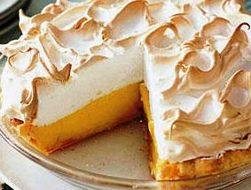

Mamas Homemade Lemon Maringue Pie

One 9-inch pie
- 30 Min - Prep time
- 10 Min - Cook time
- 40 Min - Total
- 8 Serving
INGREDIENTS
- 1 cup white sugar
- 2 tablespoons all-purpose flour
- 3 tablespoons cornstarch
- 1/4 teaspoon salt
- 1 1/2 cups water
- 2 lemons, juiced and zested
- 2 tablespoons butter
- 4 egg yolks, beaten
- 1 (9 inch) pie crust, baked
- 4 egg whites
- 6 tablespoons white sugar
DIRECTIONS
- Preheat Oven: Preheat oven to 350 degrees F (175 degrees C).
- Make Lemon Filling In a medium saucepan ...
- Whisk together 1 cup sugar, flour, cornstarch, and salt.
- Stir in water, lemon juice and lemon zest.
- Cook over medium-high heat, stirring frequently, until mixture comes to a boil.
- Stir in butter.
- Place egg yolks in a small bowl and gradually whisk in 1/2 cup of hot sugar mixture.
- Whisk egg yolk mixture back into remaining sugar mixture.
- Bring to a boil and continue to cook while stirring constantly until thick.
- Remove from heat.
- Pour filling into baked pastry shell.
- Make Meringue: In a large glass or metal bowl ...
- Whip egg whites until foamy.
- Add sugar gradually, and continue to whip until stiff peaks form.
- Spread meringue over pie, sealing the edges at the crust.
- Bake: Bake in preheated over for 10 minutes, or until meringue is golden brown.